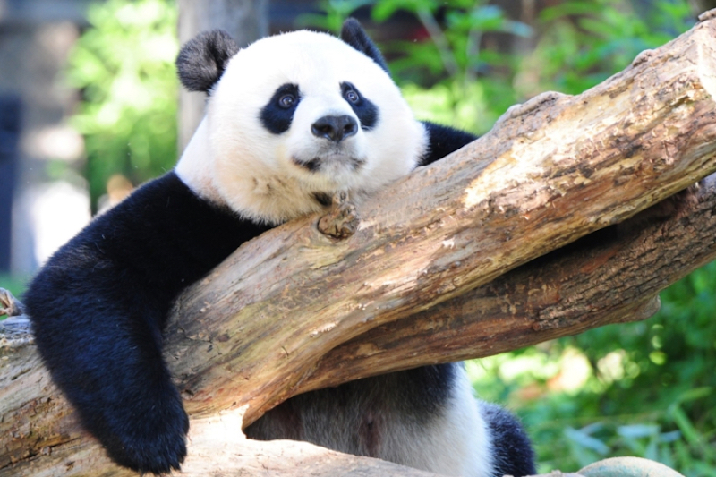
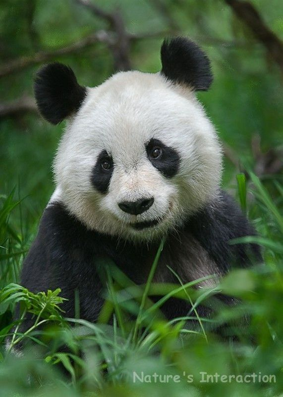

Giant Pandas
These cuties can be food obsessed and adorable!


Pandas are pretty interesting. They spend most of the day eating bamboo
and then the rest of it going to the bathroom. They can poop up to 40
times on average and spend about 12 hours a day eating. While this may
seem bizzare, they actually need to do this to stay healthy. They only
digest about a fifth of what they eat and need to maintain their body
weight.
Fun Facts
Pandas use their black and white fur as a camouflage.
They are very flexible and like to do somersaults.
The Giant panda is native to China.
via GIPHY
💗